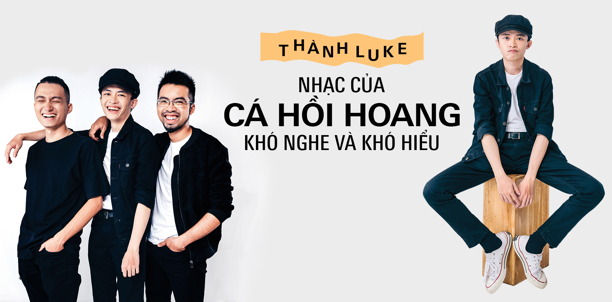

Kể khi được thành lập cho đến nay, Cá Hồi Hoang đã tạo được nhiều dấu ấn trong cộng đồng nhạc indie/underground Việt và có một lượng khán giả khá đông đảo. Ban nhạc cũng được nhiều ấn phẩm về nhạc Việt đánh giá cao. Trong một bài viết đăng trên báo Thanh niên năm 2018, cây viết Thành Long đã tôn vinh Cá Hồi Hoang là "đại diện tiêu biểu của giới indie Sài thành" kèm theo lời bình: "Nhìn lại hành trình 5 năm hoạt động, khi nhắc đến tên gọi Cá Hồi Hoang, khán giả sẽ nhớ đến hình ảnh một nhóm nhạc trẻ với 4 chàng trai cá tính cùng hàng loạt ca khúc mang màu sắc độc đáo như "Cánh đồng", "Nơi bắt đầu", "Nhà 9A"... Dù không bật lên như Soobin Hoàng Sơn, Sơn Tùng M-TP... nhưng Cá Hồi Hoang vẫn chứng tỏ sức hút của mình bởi những show diễn thu hút hàng ngàn khán giả và số lượng album được tiêu thụ khi vừa ra mắt."[2] Báo Lâm Đồng cũng dành lời khen cho những dấu ấn mà Cá Hồi Hoang tạo dựng được: "Với niềm đam mê âm nhạc, đặc biệt là dòng nhạc Indie - Underground... với những nỗ lực không mệt mỏi khi chọn một lối đi riêng trong âm nhạc, Cá Hồi Hoang đã trở thành cái tên được yêu thích đối với người nghe nhạc Indie - Underground tại Việt Nam."[1] Cây bút Minh Trang từ báo Tuổi trẻ thì tán dương Cá Hồi Hoang bằng cách so sánh họ với nhóm Ngọt: "Nếu giới nghe nhạc indie Hà Nội từng say đắm với Ngọt, thì Cá Hồi Hoang là 'ngôi sao mới' trong lòng những người trẻ yêu nhạc indie Sài Gòn."[4] Nếu như album Gấp được báo Tuổi trẻ ngợi ca là "Một thử nghiệm táo bạo nhưng cũng đầy kích thích đúng với 'tiêu chí' của những chàng trai trẻ này: không bao giờ ngưng tìm tòi sự mới mẻ trong âm nhạc của chính họ",[4] thì tờ báo cũng ghi nhận sản phẩm Hiệu ứng trốn chạy của Cá Hồi Hoang đã "thực sự thay đổi cách nhìn nhận về alternative rock ở Việt Nam".[5]
